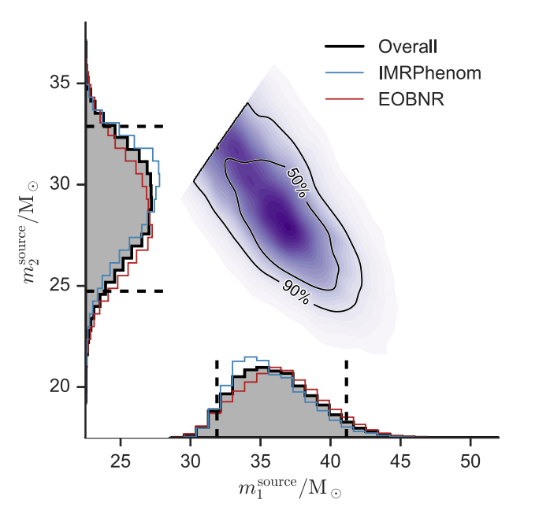
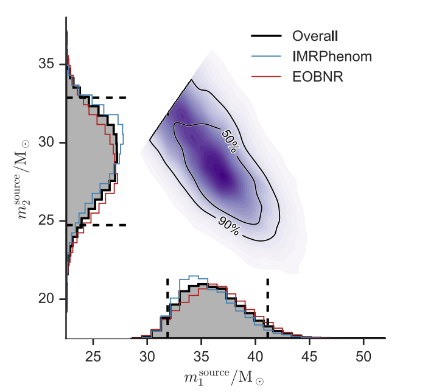

Inferring source properties
Data

Source properties
Data
Source properties
Multimodality
https://gracedb.ligo.org/superevents/S230601bf/view/
Small posterior (sometime)
Phys.Rev.X 9 (2019) 1, 011001
Credit: MCMC gallery
Worked for exoplanet, protein structures, and more!

Most of it is written by a language model. It's so good
Real data
Simulated population
2 minutes on GPU per event